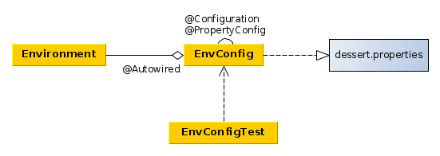
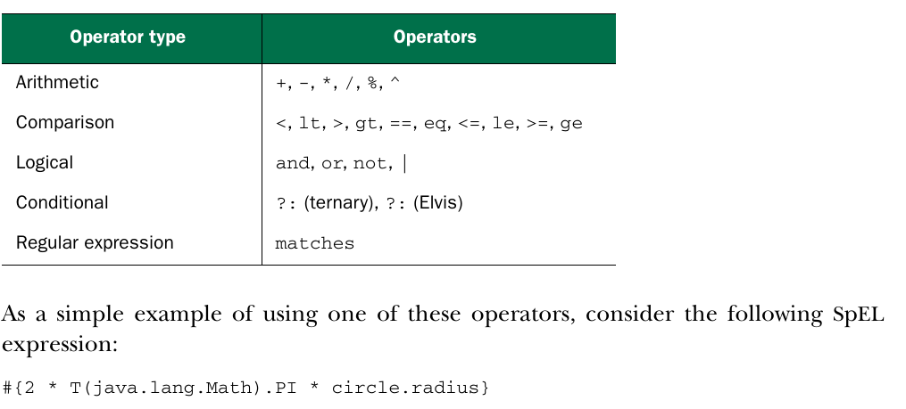

<beans profile="имя"/>
можно определить атрибут profile на корневом элементе beans,
а можно использовать вложенные элементы beans
//активные профили, профили по умолчанию выключаются
spring.profiles.active=profile1,profile2
//активные профили по умолчанию
spring.profiles.default=profile3,profile4
аналог в xml - аттрибут primary
@Scope(ConfigurableBeanFactory.SCOPE_PROTOTYPE)
<bean id="notepad"
class="com.myapp.Notepad"
scope="prototype" />
@Scope(
value=WebApplicationContext.SCOPE_SESSION,
proxyMode=ScopedProxyMode.INTERFACES)
Аттрибут proxyMode определяет какого типа прокси нужно создавать (можно инжектировать Session bean в Singleton и тогда без прокси не обойтись).proxyMode бывает: 1. INTERFACES если бин инжектируется по интрефейсу, то создается реализация этого интерфейса, которая проксирует вызовы до экземпляра бина. 2. TARGET_CLASS если бин инжектируется без интерфейса и проски нужно создать для самого класса бина.
Environment - это класс, позволяющий :

Значения свойств из environment доступны в spring при помощи ${имя-свойства}. Чтобы использовать, нужно:
<context:property-placeholder/>
value="${имя.свойства}"
#{...}
#{true} boolean
#{false} boolean
#{'string'}
#{123} integer
#{1.3} float
#{systemProperties['property.name']}
#{T(System).currentTimeMillis()} - текущее время.
#{T(java.lang.Math).PI} - значение пи
#{sgtPeppers.artist} - доступ к свойству
#{bean.method()} - доступ к методу
#{bean.name()?.toUpperCase()} - вернуть имя в верхнем регистре,
?. - не вызывать метод toUpperCase(), если name() вернул null

#{user.name matches '\\w+'}
#{jukebox.songs[4].title} //вернуть заголовок 5-ой песни
#{'This is a test'[3]} //выбрать 4-ый символ -> s
#{jukebox.songs.?[artist eq 'Aerosmith']} // .?[] выбрать подмножество
//по условию в скобках, в данном случае выбираются все песни исполнителя
//Aerosmith
//.^[] вернуть первый подходящий объект
//.$[] вернуть последний подходящий объект
#{jukebox.songs.![title]} //вернуть коллекцию из заголовков песен